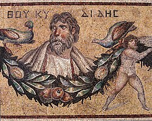

Sovereignty and Thucydides: That the strong do what they can, and the weak suffer what they must
Sovereignty has taken up space in the geopolitical debate once again. But now, this discussion, has reached richer countries, often countries that are allies of the U.S.A. This was a discussion in the 20th century that was more focused on developing countries in the post-colonial world. However, due to the Trump presidency, countries like Canada and South Korea which are trusted allies of the U.S.A. have felt threatened by the U.S.A. This discussion was blown into the geopolitical discourse by Prime Minister Mark Carney at Davos in 2026. He spoke about what the Greek historian, Thucydides stated,
That the strong do what they can, and the weak suffer what they must.
Vassals
This is supposed to be a doctrine of realism in International Relations. Yet, what Carney seemed to somehow discover about the world and what many have recently discovered is that they now were just on the other side. They are not used to receiving such treatment. They normally didn’t have to think about things such as sovereignty in such sense. In many senses of the word, many European countries have been described as being vassals of the U.S.A. This is due to the large military, economic, and technological dependence that comes from that country across the Atlantic with European capitals often racing to follow behind their heels. Carney does not over look the benefits that being such close partners to the U.S.A. gave the Canadians, rather what he said was that they participated and did not call out the “gaps” in the bargain that they were participating in. Carney has now started pointing out the gaps and in many ways was elected due to his opposition of the President of the U.S.A. Carney’s presentation of realism is something that has been prevalent in the developing world for long period of time. The weak suffered what they must.
The reality of Thucydides

A most recent development of this was during the Covid-19 pandemic where richer countries bought enough vaccines to vaccinate their populations many times over before poorer countries could buy any. This inevitably would lead to more deaths in those poorer countries. Furthermore, poorer countries such as South Africa paid more than richer countries for access to vaccines. This is the definition of what Carney was speaking of, the weak suffered what they must. The realist idea here has simply spread to Carney’s Canada through threat of annexation, it has become real. The weak, in this case Canada is attempting to prevent this suffering.
Multi-laterals
Where many in the world have lost hope in the U.N. I’d argue that the U.N. is one of the places that equals the playing field. That gives the weak a place to say their piece. Some say it is just talk, but it means something that a country as small as Tuvalu with 10,643 can be represent at the U.N. Can say that Tuvalu is dealing with sea level rise so harsh due to climate change that it may wipe out the entire island. Such a country can stand up and say something and it be taken seriously. We need more multilateral organizations because realism leads to continuing inequities and death in many of these weaker countries. Furthermore, some of these weaker countries, when they have any semblance of power, will turn to the weapon of all weapons to protect themselves as to not suffer. A world where every world leader has their finger on the edge of pressing a button is no world we would want to live in. Our current problems that will extend into the future such as climate change, poverty, water and food shortages are problems that will need cooperation to solve. Cooperation is in fact one of the things that humans do best when we put our minds to it. We need more multilateral organizations and we need to give them teeth We need treaties to protect us from the law of the jungle. If anything, they last 12 years have been proof of just that. Let’s also hope that sovereignty is truly taken seriously when it comes to all countries, not just the ones of certain allies.